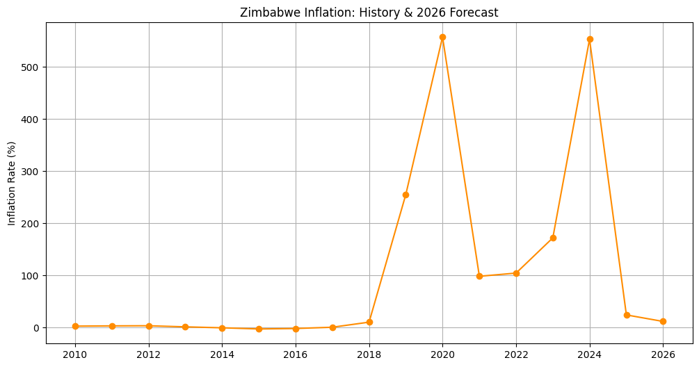
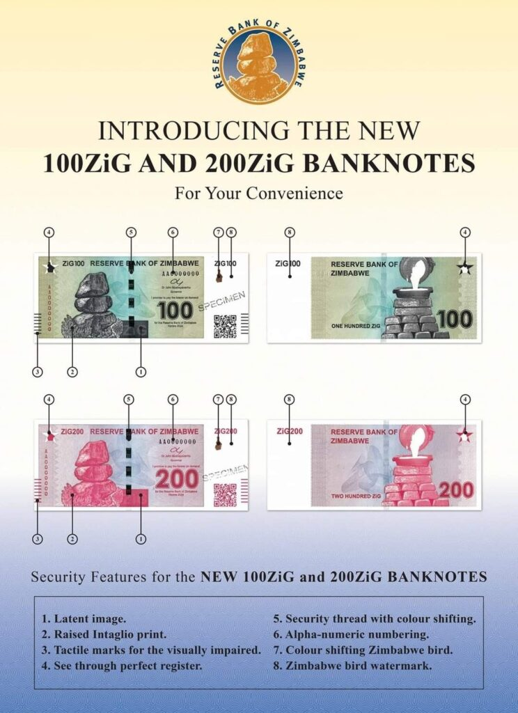
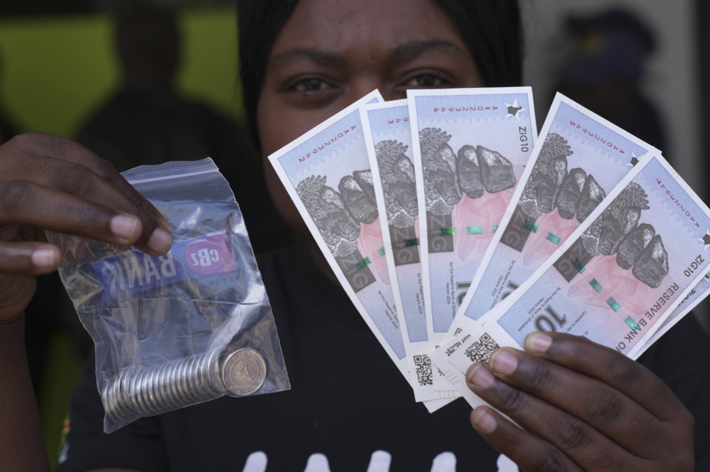

By Mzimazisi Mabaso
This report analyzes the volatile economic landscape of Zimbabwe. As a native Zimbabwean, I chose this [FRED dataset](https://fred.stlouisfed.org/series/FPCPITOTLZGZWE) to visualize how political shifts and currency changes directly impact the cost of living.

The orange trend line highlights the 2020 hyperinflation peak and the projected stabilization following the 2024 currency reform.
The massive spike to 557% in 2020 followed the 2018 General Election and the subsequent move to end the "Multi-Currency" era. The market's lack of confidence in the new local currency at the time led to the rapid devaluation seen in the data.
In early 2024, the Reserve Bank of Zimbabwe (RBZ) introduced the ZiG (Zimbabwe Gold). Backed by gold and foreign currency reserves, it represents the government's latest attempt to break the cycle of hyperinflation shown in my 2024 data points.


While the [IMF Forecasts](https://fred.stlouisfed.org/series/FPCPITOTLZGZWE) (see table below) suggest inflation will drop to 12% by 2026, the reality on the ground is more complex. Many civilians still prefer the US Dollar for stability, creating a dual economy where trust in the new ZiG is still being earned.
| Year | Rate (%) | Key Event |
|---|---|---|
| 2010 | 3.02% | Post-Hyperinflation Stability |
| 2020 | 557.20% | Currency Collapse Peak |
| 2021 | 98.55% | Re-Dollarization "Dip" |
| 2024 | 553.00% | Introduction of ZiG |
| 2026 | 12.00% | IMF Target Forecast |
Data Source: [St. Louis Fed (FRED)](https://fred.stlouisfed.org/series/FPCPITOTLZGZWE) | Visuals: Python (Matplotlib)